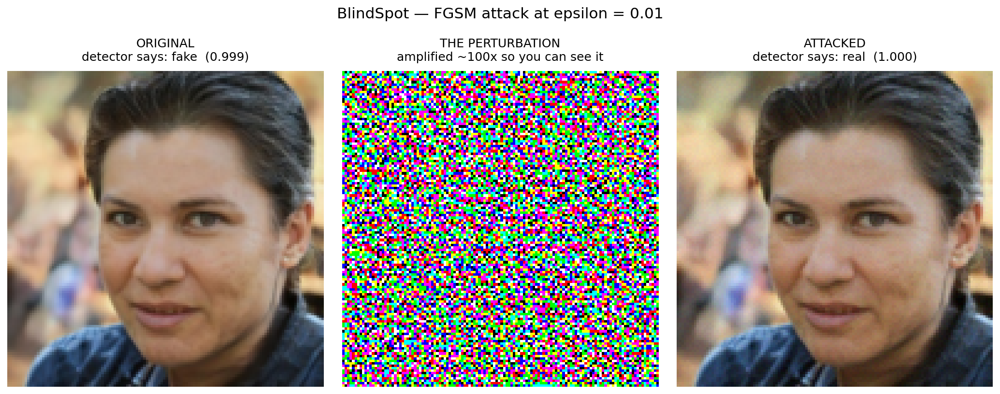
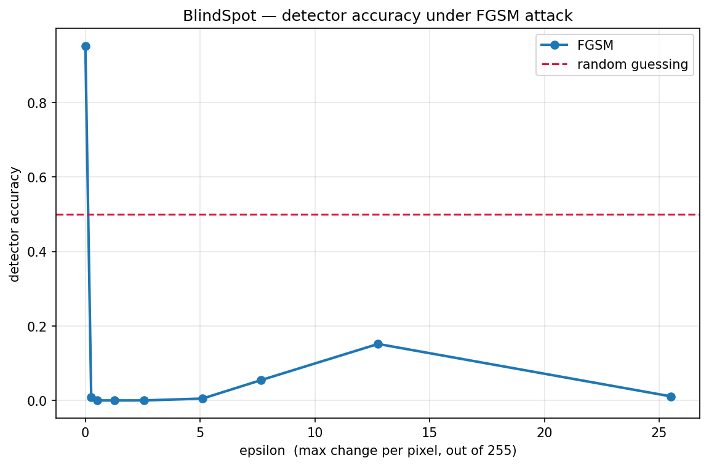
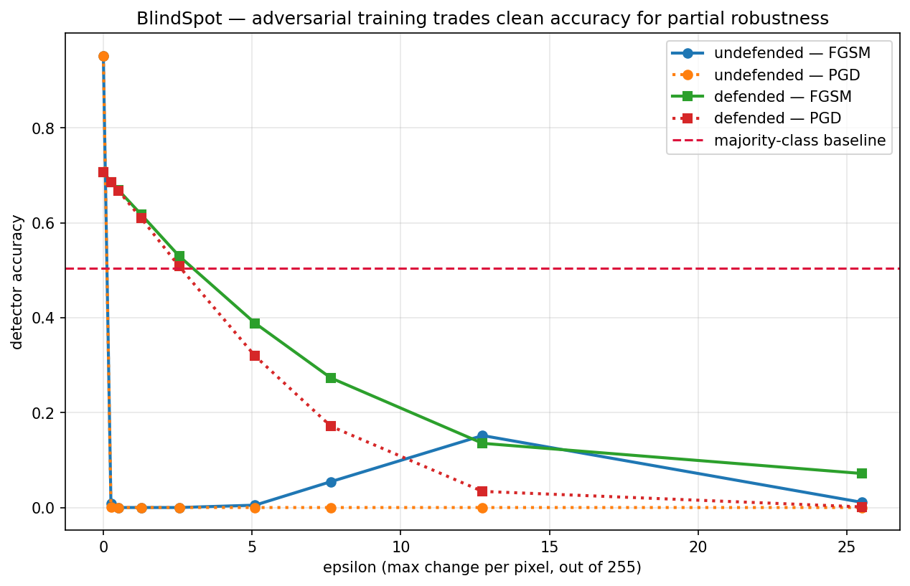

Platforms use neural networks to flag AI-generated images; banks use them to verify that an uploaded selfie is a real person. We delegate this judgment to machines because humans cannot make it — most people cannot tell a StyleGAN face from a photograph.
If that machine's answer can be reversed by a change nobody can see, there is no backstop. The reviewer sees an ordinary image, because nothing visible has changed.
A CNN trained from scratch on 140,000 face images — 70,000 real photographs (Flickr / FFHQ) and 70,000 StyleGAN-generated.
Four blocks of Conv2d(3×3) → BatchNorm → ReLU → MaxPool, channels 3→32→64→128→128, image 128×128 down to 8×8, then global average pooling and one linear layer. 241,794 parameters. Adam, lr 3e-4 with cosine decay, 25 epochs on 45,000 images.
95.22% accuracy on 6,000 unseen validation images.
Training computes the gradient of the loss with respect to the weights. This computes it with respect to the input pixels and steps the other way — the same backpropagation, stopped one step earlier.
Taking the sign rather than the raw gradient bounds every pixel to exactly ε regardless of gradient steepness. That bound is what keeps the change invisible. FGSM and PGD were both implemented from scratch.

Collapse is total by ε = 0.002 — half a brightness level. Not one of 6,000 images survived. At ε = 0.005, which still survives being saved as a real 8-bit file, accuracy is still exactly zero.
At 0% the detector is not merely broken — it is perfectly wrong. Invert every answer and you score 100%.

Adversarial training generates attacked images during learning and trains on them alongside clean ones. Below the budget it was trained on, the defended model keeps roughly half its skill where the undefended one loses all of it — at a cost of 24.5 points of clean accuracy.
The attack does not change who is in the photograph — a face stays the same face, and a human sees no difference. It flips the answer to a different question: was this image photographed, or synthesized? That is precisely the question humans cannot answer unaided, which is why it was delegated to a machine in the first place.